Технология изготовления печатных плат химическим способом
При химическом способе изготовления печатных плат на фольгированный гетинакс (стеклотекстолит) наносят рисунок печатных проводников (маска) и заготовка помещается в травильный раствор. За счет химической реакции медь, незащищенная маской, растворяется.
Технология изготовления печатных плат химическим способом состоит из нескольких этапов:
- Подготовка фольгированного стеклотекстолита.
- Нанесение рисунка печатных проводников.
- Травление.
- Сверление отверстий.
- Лужение.
Подготовка фольгированного стеклотекстолита
Для начала нужно отрезать кусок фольгированного стеклотекстолита по размерам будущей платы. Делать это лучше с небольшим припуском. Для резки фольгированного стеклотекстолита можно использовать один из следующих инструментов:
- Ножовка по металлу.
- Гравер с отрезным кругом.
- Канцелярский нож. Принцип раскройки такой же, как и при работе со стеклорезом – в несколько проходов наносится линия отреза, затем материал просто отламывается.
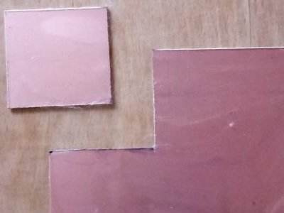
Рис. 1 - Заготовка печатной платы
Снимите заусеницы по краям заготовки напильником и обработайте наждачной бумагой. Также следует притупить углы. Эти операции позволят избежать ранений в последующих операциях с заготовкой.
Наложите чертеж печатной платы на заготовку со стороны фольги и закрепите на обратной стороне скотчем или изоляционной лентой. Накерните места монтажных и крепежных отверстий. Это позволит добиться большей точности сверления. После кернения снимаем рисунок печатной платы.
Нанесение рисунка печатных проводников
Химический способ изготовления печатного монтажа имеет несколько разновидностей, отличающихся методом нанесения изображения печатного монтажа на фольгированную заготовку. Рисунок печатного монтажа может быть выполнен:
- ручным (рисовальным) способом с помощью кисточки и рейсфедера;
- с помощью липкой ленты;
- с помощью самоклеющейся пленки.
Для рисования дорожек хорошо подходят:
- любая водостойкая эмаль, например алкидная эмаль серии ПФ, разведенная до подходящей консистенции растворителем уайт-спиртом.
- нитрокраска, с растворенным в ней порошком канифоли (обеспечавает на какое-то время после высыхания пластичность для корректировки и не дает краске "отстать" в случае травления горячими растворами).
- асфальтобитумный лак, растворенный до нужной консистенции ксилолом.
В качестве инструмента для рисования дорожек можно использовать:
- стеклянный или металлический рейсфедер,
- одноразовый шприц,
- перманентный маркер;
- зубочистка.
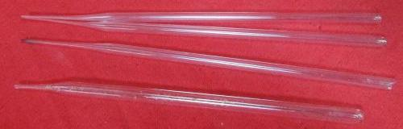
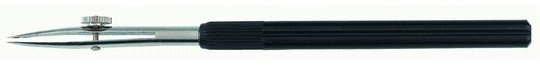
Рис. 2 - Рейсфедеры
Возможно изготовление рейсфедеров самому. Для этого можно взять тонкостенную стеклянную трубку и растянув на пламени (над газовой плитой) сломать её посередине. Затем обломанный кончик "довести" на мелкой шлифовальной шкурке. Далее, разогрев над тем же пламенем, согнуть кончик до нужного угла.
Так же можно использовать для рисования и одноразовые шприцы. Лак набирается в одноразовый шприц (1-2 мл) и ставится тонкая игла. Иглу перед установкой необходимо обработать надфилем, так, чтобы края были ровные (убрать острый конец). Со стороны поршня можно вставить еще одну иглу для прохода воздуха внутрь шприца.
Поверхность фольги нужно обязательно обезжирить с помощью ветоши любым средством, например ацетоном или уайт-спиртом (так называется очищенный бензин), можно и любым моющим средством для мытья посуды.
Для удобства рисования дорожек, их лучше предварительно наметить с помощью мягкого простого карандаша или маркера .Перед тем как начать рисовать дорожки печатного монтажа, необходимо вычертить монтажные площадки для пайки элементов. Наносятся они при помощи стеклянного рейсфедера или остро заточенной спички вокруг каждого отверстия, диаметром примерно 3 мм. Далее необходимо дать им высохнуть.
После этого нужно обрезать их при помощи циркуля до нужного диаметра. Для этого можно использовать циркуль-измеритель с резьбовым фиксатором расстояния, одна из иголок которого обточена под плоский резец. Далее обрезанные излишки подчищаются шилом или скальпелем.
В результате получаются ровные круглые площадки одного диаметра, которые нужно соединить дорожками, согласно начерченному ранее чертежу печатной платы. Если плата двухсторонняя, после просушивания рисуется вторая сторона.
После нанесения рисунка обязательно ждем некоторое время, необходимое для окончательного отвердевания лака. От этого будет зависеть качество будущих дорожек. Чтобы краска быстрее высохла плату нужно расположить в теплом месте, например в зимнее время на батарею отопления, в летнее время года - под лучи солнца. Можно даже подсушить феном.
Совет. Чтобы печатная плата при рисовании дорожек не скользила, желательно ее разместить на лист наждачной бумаги, представляющий собой два склепных между собой бумажными сторонами наждачных листа.
Нанесение рисунка печатных проводников с помощью перманентного маркера
Для рисования по фольгированному стеклотекстолиту можно использовать перманентные маркеры. Такие маркеры имеют надпись «Permanent» и оставляют очень сочный и ровный след на текстолите (рис. 3). Хорошие результаты дают маркеры Edding 780, Edding 791, Edding 792.
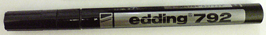
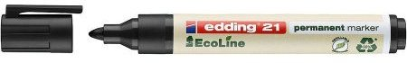
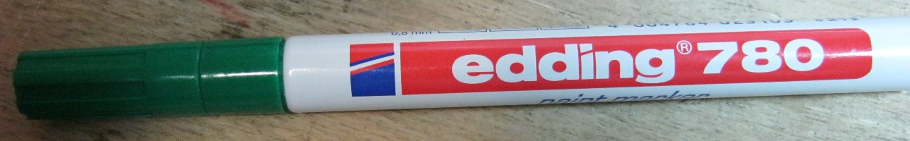
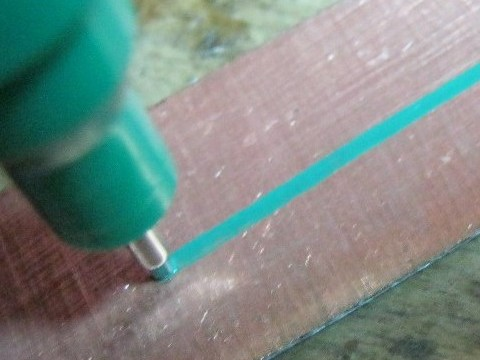
Рис. 3 - Перманентный маркер
Рисовать лучше за один проход, так как после застывания лака, который есть в составе перманентного маркера, правки делать будет весьма затруднительно. Если есть возможность, то лучше использовать несколько маркеров с наконечниками разной толщины. Это позволит более качественно прорисовать и тонкие дорожки, и обширные полигоны.
Нанесение рисунка печатных проводников с помощью чертежного рейсфедера и балеринки
Нанесение рисунка начинают с контактных площадок, которые рисуют балеринкой. Для этого нужно отрегулировать зазор раздвижных губок рейсфедера балеринки до требуемой ширины линии и для установки диаметра круга выполнить регулировку вторым винтом отодвинув рейсфедер от оси вращения.
Далее рейсфедер балеринки на длину 5-10 мм наполняется с помощью кисточки краской. Для нанесения защитного слоя на печатную плату лучше всего подходит краска марки ПФ или ГФ, так как она медленно высыхает и позволяет спокойно работать. Краску марки НЦ тоже можно применять, но работать с ней сложно, так как она быстро сохнет. Краска должна хорошо ложиться и не растекаться. Перед рисованием красу нужно развести до жидкой консистенции, добавляя в нее понемногу при интенсивном перемешивании подходящий растворитель и пробуя рисовать на обрезках стеклотекстолита. Для работы с краской удобнее всего ее налить во флакон от маникюрного лака, в закрутке которого установлена кисточка, устойчивая к растворителям.
После регулировки рейсфедера балеринки и получения требуемых параметров линий можно приступить к нанесению контактных площадок. Для этого острая часть оси вставляется в отверстие и основание балеринки проворачивается по кругу.
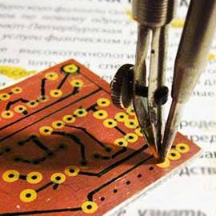
Рис. 4 - Нанесение круглых контактных площадок на печатную плату
При правильной настройке рейсфедера и нужной консистенции краски вокруг отверстий на печатной плате получаются окружности идеально круглой формы. Когда балеринка начинает плохо рисовать, из зазора рейсфедера тканью удаляются остатки подсохшей краски и рейсфедер заполняется свежей. чтобы обрисовать все отверстия на этой печатной плате окружностями понадобилось всего две заправки рейсфедера и не более двух минут времени.
Когда круглые контактные площадки на плате нарисованы, можно приступать к рисованию токопроводящих дорожек с помощью ручного рейсфедера. Подготовка и регулировка ручного рейсфедера не отличается от подготовки балеринки.
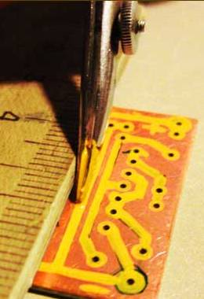
Рис. 5 - Рисование токопроводящих дорожек на печатную плату рейсфедером
Единственное, что дополнительно понадобится, так это плоская линейка, с приклеенными на одной из ее сторон по краям кусочками резины, толщиной 2,5-3 мм (рис. 6), чтобы линейка при работе не скользила и стеклотекстолит, не касаясь линейки, мог свободно проходить под ней. Лучше всего подходит в качестве линейки деревянный треугольник, он устойчив и одновременно может служить при рисовании печатной платы опорой для руки.
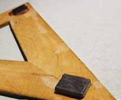
Рис. 6 - Линейка для нанесения прямых токопроводящих дорожек на печатную плату
Нанесение рисунка печатных проводников с использованием асфальтобитумного лака
Зачищенную и обезжиренную поверхность фольгированной стороны заготовки покрывают тонким слоем асфальтобитумного лака и подсушивают. На лакированную сторону заготовки накладывают чертеж печатной платы и шилом переводят контуры. Резаком по лакированной поверхности обводят проводники, прорезая слой лака до фольги.
Использование асфальтобитумного лака обусловлено сохранением его вязкости в течение длительного времени. Быстросохнущие лаки и краски в данном случае непригодны.
Выполнение рисунка печатного платы с помощью липкой ленты
На фольгированный материал наклеивают кружки и полоски, вырезанные из липкой полихлорвиниловой изоляционной ленты (синей). Кружки и полоски заготавливают следующим образом. На мотке изоляционной ленты делают надрез глубиной 1,5—2 мм (рис. 7, а), отделяют от круга несколько слоев ленты и острым ножом по линейке вырезают полоски, а высечкой вырубают кружки (рис. 7,б). Ширина полосок и диаметр зависят от чертежа печатного монтажа (табл. 1).
Таблица 1
| Элемент | Ширина ленты (толщина шайбы), мм |
Диаметр кружка, мм |
|---|---|---|
| Корпус микросхем: с шагом выводов 1,25 мм |
0,75 | 2 |
| с шагом выводов 2,5 мм | 1 | 3 |
| Дискретный радиоэлемент | 0,75-2 | 2-5 |
Высечку лучше всего выточить из стали и закалить (рис. 7,в). После вырубки получим стопку лежащих друг на друге кружков.
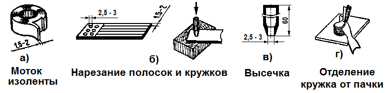
Рис. 7 - Заготовка кружков и полосок из липкой ленты
Подготовив детали из липкой ленты, приступают к изготовлению печатной платы.
Заготовку из фольгированного материала обезжиривают (промывают каким-либо растворителем) и хорошо просушивают. На заготовку кладут миллиметровку с чертежом печатного монтажа и через миллиметровку набивают керном углубления в местах заготовки, где должны быть отверстия, после чего миллиметровку удаляют. Затем из стопки кружков липкой ленты с помощью скальпеля и пинцета отделяют один кружок (рис. 7,г) и наклеивают его на углубление, набитое керном таким образом, чтобы углубление было точно в центре кружка.
После наклейки всех кружков наклеивают липкие полоски, соединяя между собой контактные площадки (кружки) согласно чертежу печатной платы, выполненному на миллиметровке. При этом надо придерживаться следующих правил: не касаться руками клеящей поверхности полоски, при наклейке не растягивать ленту, а укладывать ее без дополнительных продольных усилий; изгибы проводников делать возможно большего радиуса; соединять полоски с кружками гак, как показано на рис. 8,а, т. е. встык, и закрашивать промежуток между кружком и полоской кислотоупорной краской. Если же соединение делать внакладку (рис. 8,б), что кажется более простым, то при травлении травящий раствор попадет между полоской и кружком и после травления концы полосок подтравятся и будут иметь вид, показанный на рис. 8, б. Следовательно, такое соединение все равно требует закраски мест стыка кружка и полоски (см. рис. 8, а). Затем плату травят в указанных выше растворах, промывают и сушат.
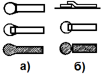
Рис. 8 - Выполнение рисунка печатного монтажа липкой лентой
Если имеется рулон липкой пленки (декоративной или типа “скотч”), то можно поступить следующим образом: на контактные площадки наклеивают вырубленные кружки и соединяют их липкой лентой, катая по поверхности заготовленную из рулона “шайбу”, (рис. 9). Повороты токоведущих дорожек при большом радиусе закругления можно “выклеивать”, деформируя ленту, а при резких изменениях направления — разрезая ленту и подклеивая ее “встык”.
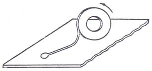
Рис. 9 - «Выклеивание» рисунка печатной платы
Выполнение рисунка печатной платы с помощью самоклеющейся пленки
Рисунок печатной платы, выполненный на бумаге, закрепляют на фольгированной стороне заготовки с помощью резинового клея или пластилина и кернером намечают на ней через бумагу отверстия под выводы деталей. Отверстия сверлят сверлом 0,8—1 мм. Если необходимо изготовить несколько одинаковых плат, сверлят сразу всю пачку заготовок, предварительно зажав ее в тисках.
Затем фольгированную сторону заготовки зачищают, обезжиривают и наклеивают на нее самоклеящуюся декоративную пленку светлого тона. Сквозь отверстия в заготовке пленку прокалывают шилом и карандашом повторяют на ней рисунок проводников и контактных площадок печатной платы.
Скальпелем или острозаточенным ножом прорезают слой пленки до фольги по контуру рисунка. Участки пленки, соответствующие вытравляемым участкам фольги, снимают и погружают заготовку в раствор хлористого железа. После травления заготовку промывают, сушат.
Если при травлении печатной платы в качестве защитной использовать прозрачную пленку с липким слоем, то перед наклеиванием пленки целесообразно перенести рисунок платы на зачищенную и обезжиренную поверхность фольги через копировальную бумагу.
Вырезание пленки по рисунку платы можно облегчить следующим способом. Простой карандаш с грифелем твердостью Т или 2Т остро затачивают с одного конца, а к другому концу, частично обнажив грифель, с помощью зажима “крокодил” или проволочного бандажа подключают один из выводов накальной обмотки (6,3 В) трансформатора. Второй вывод обмотки надежно соединяют с фольгой заготовки платы. Включают трансформатор в сеть через ЛАТР и острием грифеля карандаша прокалывают липкую пленку. В точке касания грифеля с фольгой выделяется теплота и пленка расплавляется. Подбирая силу тока, добиваются хорошего расплавления пленки при движении острия карандаша по контуру рисунка.
Исправление дефектов рисунка дорожек
Если при рисовании дорожек и окружностей они соприкоснулись, то не стоит принимать никаких мер. Нужно дать краске на печатной плате подсохнуть до состояния, когда она не будет пачкать при прикосновении и с помощью острия ножа (скальпеля) удалить лишнюю часть рисунка.
Следует отметить, чтобы выровнять край дорожки, нужно сначала обрезать кромку по линейке (лучше металлической), а затем удалить излишки выцарапыванием. Если подчищать дорожку сразу, то в зависимости от степени пересушенности краски, можно получить "сколы" еще хуже первоначальных. Проверьте соответствие рисунка на плате с рисунком на чертеже.
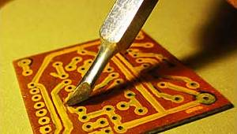
Рис. 10 - Исправление дефектов рисунка дорожек
Травление
Для травления печатной платы, чаще всего, используется раствор хлорного железа. Составы других растворов для травления фольгированного материала смотри здесь.
Для травления платы в любом из травильных растворов подойдет стеклянная, керамическая или пластиковая посуда, например от молочных продуктов питания. Если под рукой подходящего размера емкости не оказалось, то можно взять любую коробку из плотной бумаги или картона подходящего размера и выстелить ее внутренность полиэтиленовой пленкой.
Травить печатные платы в металлической посуде не допускается.
Утилизировать отработанный травильный раствор допускается в канализацию.
Готовим раствор хлорного железа согласно рекомендациям на упаковке. Обычно порошок разбавляется водой в соотношении 1:3. В емкость наливается травильный раствор и на его поверхность аккуратно рисунком вниз кладется печатная плата. За счет сил поверхностного натяжения жидкости и небольшого веса плата будет плавать.
Посуда для травления выбирается так, чтобы плата не ложилась полностью на дно, а углами опиралась на стенки тарелки. Тогда между платой и дном будет пространство, заполненное раствором. Во время травления плату необходимо переворачивать и помешивать раствор. Если надо быстро протравить плату, подогрейте раствор до 50-70°С.
Если плата больших размеров, то в крепёжные отверстия (по углам) вставьте спички так, чтобы они выступали на 5-10 мм с обеих сторон. Можно вставлять медную проволоку, но тогда будет большее насыщение раствора медью. Травите в фото кювете, помешивая и переворачивая плату.
Работая с раствором хлорного железа необходимо соблюдать осторожность. Раствор практически невозможно смыть с одежды и предметов. При попадании на кожу, промойте содовым раствором. Фарфоровая тарелка легко отмывается от раствора и может применяться в дальнейшем по прямому назначению. По окончании травления слейте раствор в пластмассовую бутылку, он вам еще пригодится.
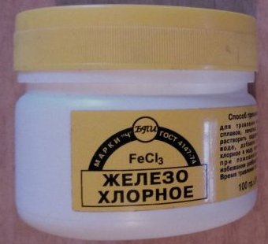
Рис. 11 - Хлорное железо
Совет. Сделайте раствор более насыщенным. Это поможет ускорить процесс, и нарисованные дорожки не отвалятся прежде, чем вытравится все необходимое.
Совет. Ванночку с раствором рекомендуется погрузить в горячую воду. Повышение температуры значительно ускоряет химическую реакцию травления. Нанесенные маркером дорожки достаточно нестабильны, и чем меньше они будут находиться в жидкости, тем лучше. Если при комнатной температуре плата в хлорном железе травится около часа, то в теплой воде этот процесс сокращается до 10 минут.
Совет. В процессе травления, хоть он и так ускорен за счет подогрева, рекомендуется постоянно двигать плату, а также счищать продукты реакции щеточкой для рисования.
Совет . Для удобства к центру платы клеем момент можно приклеить пробку от пластиковой бутылки. Пробка одновременно будет служить ручкой и поплавком. Но тут есть опасность, что на плате образуются пузырьки воздуха и в этих местах медь не вытравится.
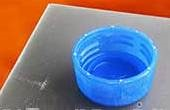
Рис. 12 - Пробка - ручка
Чтобы обеспечить равномерное вытравливание меди можно положить печатную плату на дно емкости вверх рисунком и периодически покачивать ванночку рукой. Через некоторое время, в зависимости от травильного раствора, начнут появляться участки без меди, а затем медь растворится полностью на всей поверхности печатной платы.
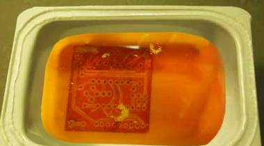
Рис. 13 - Травление
После окончательного растворения меди в травильном растворе печатную плату извлекают из ванночки и тщательно промывают под струей проточной воды. Тонер удаляется с дорожек ветошью, смоченной в ацетоне, а краска хорошо удаляется ветошью, смоченной в растворителе, который добавлялся в краску для получения нужной ее консистенции.
Совмещая все вышеописанные манипуляции вполне возможно вытравить лишнюю медь всего за 5-7 минут, что является просто отличным результатом для этой технологии.
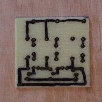
Рис. 14 - Печатная плата после травления
После травления плату нужно тщательно промыть под проточной водой и просушить. Лак снимите при помощи безопасного лезвия (счищать) под тонкой струей воды. Следы от маркера, закрывающие дорожки и контактные площадки, можно удалить спиртом или ацетоном.
Высушенную плату необходимо подчистить скальпелем от лишних соединений и расплывшегося лака. Если дорожки близко друг к другу, то можно расширить просвет скальпелем.
Сверление отверстий
Для сверления отверстий можно использовать следующие инструменты:
- мини-сверлильный станок;
- мини-дрель (гравер, дриммель);
- шуруповерт;
- ручная дрель.
Сверлить отверстия лучше всего с помощью специального мини-сверлильного станка твердосплавным сверлом нужного диаметра. Если сверлильного станка в наличии нет, то можно просверлить отверстия маломощной дрелью простым сверлом. Можно купить цанговый или кулачковый патрон под маленькие сверла и приспособить его к ручной дрели.
Совет. Если сверло зажать не удается, то можно его хвостовик обернуть несколькими слоями бумаги или одним слоем наждачной шкурки. Можно на хвостовик намотать плотно виток к витку тонкой металлической проволочки.
Важным условием того, чтобы сверло не повело, является его "свежесть". Впрочем чего ждать от конкретного сверла, можно понять, просверлив пробное отверстие на каком-нибудь обрезке стеклотекстолита. Все отверстия, включая и крепежные, сверлятся одним (наименьшим) диаметром. Далее необходимо проверить сверление на "просвет" так как обязательно найдутся непросверленные отверстия. Такие отверстия нужно досверлить. Далее производится рассверливание крепежных и остальных, больших по диаметру, отверстий.
Сверлить отверстия в стеклотекстолите можно на любой скорости. Опыт показывает, что сами сверла служат намного дольше, если их эксплуатировать на низких скоростях. Так их сложнее сломать, погнуть и повредить заточку.
После окончания сверления проверяется, все ли просверлены отверстия. Это хорошо видно, если посмотреть на печатную плату на просвет.
После произведенных операций, производится зачистка поверхности платы мелкой наждачной бумагой. Цель – получить чистую блестящую поверхность. Этот процесс необходим для удаления заусениц от сверления и для лучшего сцепления краски рисунка с поверхностью. До зеркального блеска зачищать медный слой не стоит, так как мелкие царапины от наждачной бумаги увеличивают адгезию поверхности, что понадобится дальше.
В завершение необходимо очистить фольгу от пыли и следов ваших пальцев. Для этого используется спирт, ацетон, жидкость для снятия лака. После обработки к медной поверхности руками не прикасаемся. Для последующих манипуляций захватываем стеклотекстолит за грани.
Лужение платы
Лужение печатной платы перед монтажом улучшает паяемость, значительно облегчает и ускоряет монтаж, уменьшает опасность перегрева элементов при монтаже. Перед лужением еще раз проходимся по медному слою наждачной бумагой. Но теперь делаем это предельно осторожно, чтобы не повредить дорожки.
Самый простой и доступный способ лужения – с помощью паяльника, флюса и припоя. На очищенные дорожки кисточкой наносится жидкий флюс. Далее на жало паяльника набирается небольшое количество припоя и распределяется на контактные площадки и, при необходимости, проводящие дорожки. Здесь важно прогреть дорожки, иначе припой может не «приклеиться».
Лужение можно выполнить очищенной от проводов луженой экранной оплеткой (белого цвета). Предварительно оплетка пропитывается канифолью и небольшим количеством припоя. Далее оплетка прижимается к поверхности дорожки паяльником и медленно равномерно (подбирается экспериментально) проводится по длине дорожки. Если все условия выполнены правильно, то в результате получится ровная луженая дорожка. После того как все дорожки на всех сторонах обработаны, производится промывка платы спиртом. Промывка ацетоном нежелательна, так как припой с ацетоном дает со временем токопроводящее химическое соединение в виде белого налета по краям площадок и дорожек, а при достаточной плотности монтажа есть опасность ненужных гальванических связей. После промывки проводится очистка монтажных отверстий для установки компонентов.
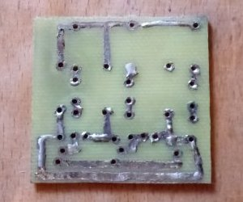
Рис. 15 - Печатные проводники на плате
Лудить можно в алюминиевой посуде (плата должна умещаться на дне плашмя). В посуду наливают глицерин (толщина слоя около 1 см) и разогревают его примерно до 60 °С. Затем в глицерин кладут куски сплава Розе и продолжают подогрев до его расплавления. Не следует разогревать расплав выше 100 °С.
Плату декапируют в 20%-ном растворе соляной кислоты, промывают водой и опускают
в расплав на 1—3c. Вынутую плату быстро протирают поролоновой
губкой, удаляя с поверхности излишки сплава. Остатки глицерина смывают
теплой водой.
Чтобы уменьшить опасность отслаивания проводников во
время пайки деталей, всю плату, за исключением контактных площадок, после
лужения покрывают слоем клея БФ-2.
Советы
- Маркировка проводников на схеме и печатной плате облегчит монтаж, настройку и поиск возможных неисправностей. Маркировку на печатную плату наносят вместе с защитным слоем перед травлением.
- Нанесение обозначений на печатную плату, необходимых при монтаже, настройке и ремонте, можно значительно ускорить и упростить, если использовать для этой цели пленку с переводимыми знаками (деколь). Порядок изготовления печатной платы в этом случае обычный: обезжиривание заготовки, нанесение рисунка и обозначений, травление с последующей промывкой и просушкой.
- Удобный скребок для ретуширования рисунка печатной платы, нанесенного тушью или нитрокраской, получится, если в зажим цангового карандаша вставить кусочек лезвия безопасной бритвы.|Хотите работать слегка изогнутым лезвием — выберите цангу с нечетным числом губок.
- Если при разработке рисунка печатной платы трудно обойтись без пересечения печатных проводников, то один из проводников разрывают, а на концах разрыва предусматривают контактные площадки с отверстиями. После изготовления печатной платы в отверстия со стороны деталей паяют проволочную перемычку.
- Для нанесения рисунка на плату можно использовать силикатный клей, который затем сушат под лампой 4—5 мин.
- Вместо краски в качестве защитного слоя при травлении в азотной иди соляной кислоте можно воспользоваться раствором канифоли в этиловом спирте. Для высыхания рисунка обычно достаточно 10 мин.
- Снять тушь с кальки можно тампоном, смоченным смесью клея БФ и уксусной кислоты в соотношении 1 : 5.
- Для макетирования схем на интегральных микросхемах удобно использовать монтажные платы типа “слепыш”. На такой плате имеются контактные площадки для пайки интегральных микросхем и для пайки соединительных проводников. Установив микросхемы, с помощью тонкого монтажного провода выполняют навесной монтаж соединений.
- Для снятия оксидной пленки с фольги и для ее обезжиривания удобно пользоваться ученической чернильной резинкой.
- Отверстия малого диаметра в тонких платах можно сверлить иглой для швейных машин. При этом у иглы отламывают ушко и затачивают режущие кромки, как у обычного сверла. Работать таким "сверлом" следует на повышенных оборотах патрона дрели.
- Травление печатных плат можно производить в полиэтиленовом мешке. Плату помещают в мешок и заливают раствором хлорного железа. Предварительно острые углы платы закругляют, чтобы не повредить мешок. Покачивая мешок в процессе травления, перемешивают раствор. Если необходимо работать при повышенной температуре раствора, мешок помещают в сосуд с горячей водой, удерживая за края.
- Травление печатной платы в концентрированном растворе азотной кислоты занимает 1—5 мин. Работать нужно на открытом воздухе. Готовую плату тщательно промыть теплой водой с мылом.
- С двусторонней фольгированной заготовки при выполнении одностороннего печатного монтажа целесообразно снять второй слой фольги (с целью экономии травящего раствора). Для этого лезвием ножа аккуратно отделяют угол фольги и с помощью пинцета или плоскогубцев снимают весь слой.
- Время травления платы зависит от интенсивности обмена раствора у поверхности фольги. Поэтому для ускорения травления сосуд следует периодически покачивать.
- Если подходящего сосуда для травления найти не удается, можно поступить следующим образом. Вырезают заготовку с припуском 6—8 мм по периметру. После нанесения рисунка по краям заготовки со стороны фольги формируют из пластилина бортик высотой 10—15 мм, В образовавшуюся “кювету” заливают раствор хлорного железа. Сверлить отверстия для установки деталей и под проводники в этом случае придется после травления.
- Очистить кювету, в которой многократно проводилось травление, можно с помощью электролита щелочных аккумуляторов: кювету на несколько часов заливают раствором, после чего промывают в проточной воде.
Источники
sdelaysam-svoimirukami.ru - Простой способ изготовления печатных плат
radiostroi.ru - Травление плат с помощью перекиси
ydoma.info - Печатные платы – изготовление в домашних условиях своими руками